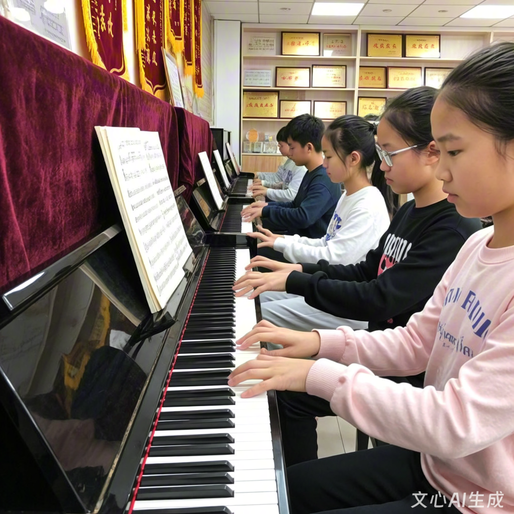

社团简介
活动安排
风采展示
社员故事
在线报名
社团简介
星芒琴韵社:琴键上的梦幻天地
在这片充满活力与艺术氛围的校园里，钢琴社宛如一颗璀璨的明珠，散发着独特而迷人的魅力，吸引着众多热爱音乐、钟情钢琴的学子汇聚于此，共同开启一段段美妙的音乐之旅。
社团起源与宗旨
钢琴社诞生于2004年，自创立之初，便怀揣着“以琴会友，以乐传情”的宗旨。我们致力于为热爱钢琴的同学们提供一个交流、学习与展示的平台，让大家在悠扬的琴音中感受音乐的无穷魅力，提升音乐素养与艺术修养，丰富校园文化生活，让每一个热爱钢琴的灵魂都能在这里找到归属感。
社团活动与风采
日常教学，夯实基础:
我们拥有专业且经验丰富的指导老师，他们会根据社员们不同的基础水平制定个性化的教学计划。从最基础的指法练习、识谱技巧，到复杂的曲目演奏、情感表达，老师都会耐心细致地讲解与示范。在这里，无论你是零基础的初学者，还是有一定基础的进阶者，都能在老师的悉心指导下不断进步，掌握扎实的钢琴演奏技能。
主题演奏会，绽放光彩:
定期举办的主题演奏会是钢琴社的一大亮点。我们精心策划不同主题，如古典音乐之夜、现代流行音乐专场、节日主题音乐会等，让社员们有机会在舞台上展示自己的学习成果。每一次演奏会都是一场视听盛宴，社员们用灵动的指尖在琴键上跳跃，奏响一曲曲动人的乐章，赢得了师生们的阵阵掌声与喝彩。这不仅锻炼了社员们的舞台表演能力，更增强了他们的自信心和成就感。
音乐交流活动，拓宽视野:
为了拓宽社员们的音乐视野，我们积极组织各类音乐交流活动。邀请校内外知名的钢琴演奏家、音乐教育家来社开展讲座与大师课，让社员们近距离感受大师的风采，学习到更前沿的音乐理念和演奏技巧。同时，我们还会与其他学校的钢琴社团进行交流演出，在相互切磋中共同进步，增进彼此之间的友谊。
音乐创作与改编，激发创意:
鼓励社员们发挥自己的创意和想象力，进行音乐创作与改编。无论是将经典曲目赋予新的风格，还是创作属于自己的原创音乐作品，社团都为大家提供了支持和展示的机会。在这里，每一个灵感都能得到尊重，每一个创意都能得到实现，让社员们在音乐创作的道路上不断探索与成长。
社团氛围与团队
钢琴社就像一个温暖的大家庭，社员们来自不同的年级和专业，但都因为对钢琴的热爱而走到了一起。在这里，没有年龄的界限，没有专业的隔阂，大家相互学习、相互帮助、共同进步。无论是日常的练习，还是活动的筹备，社员们都齐心协力，为了共同的目标而努力。这种团结友爱、积极向上的氛围，让每一个加入钢琴社的成员都能感受到家的温暖。
加入我们，开启音乐新征程
如果你热爱钢琴，渴望在音乐的海洋中畅游；如果你渴望有一个展示自己才华的舞台，结交志同道合的朋友；那么，不要犹豫，加入我们[学校名称]钢琴社吧！在这里，你将收获知识、收获友谊、收获成长，让自己的青春在悠扬的琴音中绽放出绚丽的光彩。
无论你是初学者，怀揣着对钢琴的好奇与憧憬；还是有一定基础的爱好者，想要进一步提升自己的演奏水平；亦或是有着音乐创作梦想的才子才女，钢琴社都将为你提供广阔的发展空间和无限的可能。让我们一起用双手奏响生命的乐章，用音乐书写青春的华章
活动安排
| 钢琴社 2025 年秋季学期活动安排表 |
|---|
| 活动 | 时间 | 地点 |
|---|
| 新成员见面会 | 2025.9.25 | 129教室 |
| 钢琴基础教学公开课 | 2025.11.9 |
风采展示
